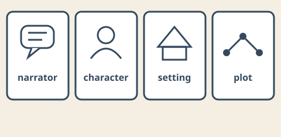

Vier Werkzeuge: narrator, character, setting, plot
Mit einem KI-Tutor lernen
Ein KI-Tutor erklärt dir diese Seite und hilft dir bei den Aufgaben. Wähl deinen Assistenten:
Mit Claude öffnen Mit ChatGPT öffnen Mit Mistral Vibe öffnen
Du nutzt dein eigenes Konto beim Anbieter. Der Assistent ist kein Angebot von lernapps.net: lernapps liefert nur Inhalte und Aufgaben. Die Wahl gilt für alle Seiten, nur auf diesem Gerät.
Erst die story map, dann der Werkzeugkasten
Aufgabe
Lösung
Zu welcher Zeit spielt die Geschichte richtige Antwort
Das Feld when hält fest, wann die Geschichte spielt, zum Beispiel an einem Morgen im Winter.
Wer kommt in der Geschichte vor
Diese Frage gehört zum Feld who.
Was passiert in der Geschichte
Diese Frage gehört zum Feld what.
Die story map fragt nach who, where, when und what. Mit Fachbegriffen kannst du solche Fragen genauer stellen.
Das kannst du danach: Du benutzt die Fachbegriffe narrator, character, setting und plot. Du schreibst deine Antwort mit einem festen Satzanfang und gibst als Beleg die Zeile an, in der sie im Text steht.
Eine Kurzgeschichte
| Englisch | Deutsch |
|---|---|
| bakery | Bäckerei |
| baker | Bäcker, Bäckerin |
| oven | Backofen |
| pizzeria | Pizzeria |
| apprentice | Auszubildende, Auszubildender |
| dough | Teig |
| tray | Backblech |
| rush | hetzen, sich überstürzen |
| stare | starren |
| whisper | flüstern |
| loaf (plural loaves) | Brotlaib |
| crackling | knisternd |
| slippers | Hausschuhe |
| apron | Schürze |
| rolls | Brötchen |
| van | Lieferwagen |
| hum | Brummen, Summen |
| yard | Hof |
Die Zahlen in eckigen Klammern sind die Zeilennummern des Textes.
Night Shift
[1] It was ten past four in the morning, and the bakery on Mill Lane was already warm and loud.
[2] Mrs Okafor stood at the long table and cut the dough into neat pieces. She did not hurry. She had done this work for thirty years.
[3] Dan, the new apprentice, was not calm. He looked at the clock every minute, and he dropped a tray of rolls twice.
[4] "Relax," said Mrs Okafor. "Bread does not like people who rush."
[5] At half past four the big oven made a strange noise, coughed once and went dark. Outside, Mill Lane was empty and the streetlamps were still on.
[6] Dan stared at it. "The hospital order," he whispered. "Forty loaves. The van leaves at six."
[7] Mrs Okafor wiped her hands on her apron and looked at the oven for a long moment. She said nothing, but she was already thinking. Then she picked up the telephone.
[8] "Hello, Marco? It is Grace. I need your pizza oven. Yes, now. I will bring the dough myself."
[9] The pizzeria next door was dark, but Marco opened the back door in his slippers. His oven was small, so they baked the loaves in four rounds. Dan carried the trays across the yard, and he did not drop a single one.
[10] While the loaves baked, Marco made coffee for all three of them. Dan held his cup with both hands and listened to the quiet hum of the little oven.
[11] At ten to six the last loaf came out, brown and crackling.
[12] Dan loaded the van with forty warm loaves. His hands were still shaking, but he was smiling.
[13] "You were right," he said. "Bread really does not like rushing."
[14] "I said bread does not like people who rush," said Mrs Okafor. "I never said it does not like friends." She closed the van door and looked up at the sky. It was getting light.
Vier Karten für deinen Werkzeugkasten
Jedes Werkzeug ist eine Werkzeugkarte mit einem Fachbegriff, einer Leitfrage und einem Satzanfang. Die Karten verfeinern die story map: who wird zu character, where und when werden zu setting, what wird zu plot. Neu ist der narrator, den die story map nicht hat.
- narrator
Der Erzähler ist die Stimme, die die Geschichte erzählt.
- character
Die Figur ist eine Person, die in der Geschichte handelt und spricht.
- setting
Das setting ist der Ort und die Zeit der Handlung.
- plot
Der plot sind die Ereignisse der Geschichte in ihrer Reihenfolge.

© CC-BY-4.0Die vier ersten Karten deines Werkzeugkastens. Auf den nächsten Seiten kommen weitere Karten dazu. Die Zeichen sind nur Merkhilfen.
Die Leitfrage stellst du an den Text. Mit dem Satzanfang schreibst du deine Antwort: Die drei Punkte ergänzt du selbst.
| Karte | Leitfrage | Satzanfang |
|---|---|---|
| narrator | Who tells the story? | The narrator tells … |
| character | Who is in the story and what are they like? | The character is … |
| setting | Where and when does it happen? | The setting is … |
| plot | What happens and in which order? | The plot starts with … |
Merke
Ein Beleg nennt die Zeile: The setting is a school (l. 3). Für mehrere Zeilen schreibst du (ll. 2-5).
Der Erzähler (narrator) ist nicht die Autorin. Auch wenn er ich sagt, hat die Autorin ihn erfunden. Solche Erzähler lernst du auf einer späteren Seite kennen. Das setting ist mehr als ein Ort, denn zum setting gehört auch die Zeit. Der plot ist keine Liste aller Einzelheiten, sondern das, was die Geschichte vorantreibt.
Wende die Karten auf den Text an
Aufgabe
Lösung
Mrs Okafor
Mrs Okafor spricht in der Geschichte, zum Beispiel in Zeile 4. Sie ist eine Figur (character) und erzählt nicht.
Dan
Dan spricht und handelt wie Mrs Okafor, er ist eine Figur (character). Über ihn wird erzählt, er erzählt nicht.
Die Autorin oder der Autor
Die Autorin oder der Autor hat die Geschichte geschrieben, aber den narrator erfunden. Die beiden sind nicht dieselbe Person.
Ein narrator, der in der Geschichte nicht vorkommt richtige Antwort
In dieser Geschichte kommt der narrator nicht vor. Er berichtet über Mrs Okafor und Dan und kennt ihre Gefühle.
In dieser Geschichte steht der narrator außerhalb der Handlung und erzählt, was die Figuren tun und fühlen. Es gibt auch Erzähler, die in der Geschichte vorkommen.
Aufgabe
Lösung
Zeile 3 richtige Antwort
Dan ist nervös, er schaut ständig auf die Uhr und lässt ein Blech fallen.
Zeile 4
In Zeile 4 spricht Mrs Okafor. Die Zeile zeigt vor allem etwas über sie.
Zeile 6 richtige Antwort
Dan starrt auf den Ofen und flüstert. Man merkt, dass er sich Sorgen macht.
Zeile 8
In Zeile 8 spricht Mrs Okafor am Telefon. Die Zeile zeigt vor allem etwas über sie.
Zeile 12 richtige Antwort
Seine Hände zittern noch, aber er lächelt. Er ist erleichtert.
Über Dan erfährst du in den Zeilen 3, 6 und 12 etwas durch das, was er tut und sagt. Es gibt noch weitere Zeilen über ihn.
Aufgabe
Schreibe einen Satz mit dem Satzanfang der Karte setting und gib die Zeile als Beleg an. Wo backen sie die Brote, nachdem der Ofen ausgefallen ist?
Tipp
Lies die Zeilen nach dem Anruf. Welche Zeile nennt den Ort nebenan?
- place · bake · loaves · next door
Lösung
- The setting is a pizzeria next door (l. 9). (auch richtig: The setting is a pizzeria (l. 9).)
Die Zeile ist der Beleg für das setting.
Aufgabe
Lösung
Richtige Antwort: 1. The oven goes dark., 2. Mrs Okafor phones Marco., 3. They bake the loaves in the pizzeria., 4. Dan loads the van.
Zuerst fällt der Ofen aus. Dann folgen der Anruf, das Backen nebenan und die Lieferung.
Aufgabe
Lösung
Mrs Okafor is calm because she knows her work well (ll. 2, 4) richtige Antwort
Der Satz nennt die Karte, deutet die Zeile, begründet die Deutung und gibt die Zeile an.
Mrs Okafor is a baker who works in the early morning (l. 2)
Das ist eine Tatsache aus dem Text. Es fehlt die Deutung, was der Satz über sie zeigt.
Mrs Okafor is calm and kind (l. 1)
Die Deutung passt, aber Zeile 1 belegt sie nicht. Dort steht nichts über Mrs Okafors Ruhe.
Dan is calm because he knows his work well (l. 4)
In Zeile 4 spricht Mrs Okafor. Dan ist in der Geschichte nervös.
Eine gute Antwort hat die Karte, eine Deutung, eine Begründung und die richtige Zeile.
Aufgabe
Schreibe den Satz zur Karte narrator, ohne Zeile.
Tipp
Der Satz beginnt wie auf der Karte. Das Verb steht im simple present.
- narrator · tell · story · from outside
Lösung
- The narrator tells the story from the outside the story. (auch richtig: The narrator tells the story from the outside.; The narrator tells the story from outside the story.; The narrator tells the story from outside.)
So klingt der Satzanfang der Karte narrator in einem ganzen Satz.
Aufgabe
Höre den Satz und schreibe ihn auf.
- KI
- KI
- KI
Lösung
- The old kitchen is the setting of the whole story.
- Her brother is the most interesting character.
- The plot begins with a broken window.
Die Sätze benutzen die Fachbegriffe in neuen Zusammenhängen.
Dein Werkzeugkasten im Einsatz
Offene Aufgabe
Wende alle vier Karten auf den Text an. Schreibe vier englische Sätze, je einen mit dem Satzanfang einer Karte, und gib bei jedem eine Zeile als Beleg an.
Eine gute Antwort enthält:
- Der Satz zum narrator sagt, dass er die Geschichte von außen erzählt. Nachlesen
- Der Satz zur Karte character nennt eine Person mit einer Eigenschaft und einer Zeile. Nachlesen
- Der Satz zum setting nennt Ort oder Zeit mit einer Zeile. Nachlesen
- Der Satz zum plot nennt ein Ereignis, mit dem die Geschichte beginnt oder sich wendet. Nachlesen
- Vier ganze Sätze im simple present, jeder mit einer Zeile in der Form (l. 3). (Form)
Lösung
The narrator tells the story from outside and knows what Dan feels (l. 3). The character is Dan, who is nervous because he looks at the clock every minute (l. 3). The setting is a bakery in the early morning (l. 1). The plot starts with a broken oven that stops the work (l. 5).
Die App bewertet deinen Text nicht. Prüfe ihn selbst an den Punkten.
Aufgabe
Höre dir jeden Satz an, sprich ihn nach und nimm dich auf. Höre dich dann an und bewerte deine Aussprache selbst.
- The narrator is not one of the characters.KI
- The setting is a busy market in a quiet village.KI
- The plot follows a courier through the city.KI
Zum Aufnehmen braucht diese Aufgabe JavaScript. Die Beispiele kannst du auch ohne anhören.
Lösung
- The narrator is not one of the characters.
- The setting is a busy market in a quiet village.
- The plot follows a courier through the city.
Dein erster Listeneintrag
Deine Klasse stellt eine Lese- und Sehliste für Year 10 zusammen. Zu jedem Text gehört ein Eintrag mit einer Werkzeugkarte und einer Zeile als Beleg. Nimm deinen stärksten Satz aus der Schreibaufgabe als Eintrag für die Kurzgeschichte aus der Bäckerei. Auf der nächsten Seite lernst du die Merkmale einer Kurzgeschichte kennen und erweiterst die Karte plot.
Fehler gefunden oder eine Idee für diese App?